En primer lugar crearemos una carpeta llamada HTTP en la cual se encuentra otra carpeta llamada docker-apache, si accedemos a ella nos aparecerá otra carpeta llamada “public-html” y un archivo “Dockerfile”, si accedemos a la carpeta tendremos 5 carpetas en las cuales tendremos un archivo llamado “index.html”y “estilo.css” y un archivo llamado “Index.html”.
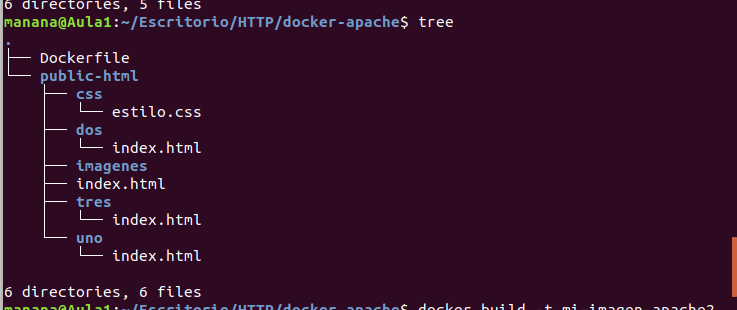Abrimos el visual estudio y escribimos:
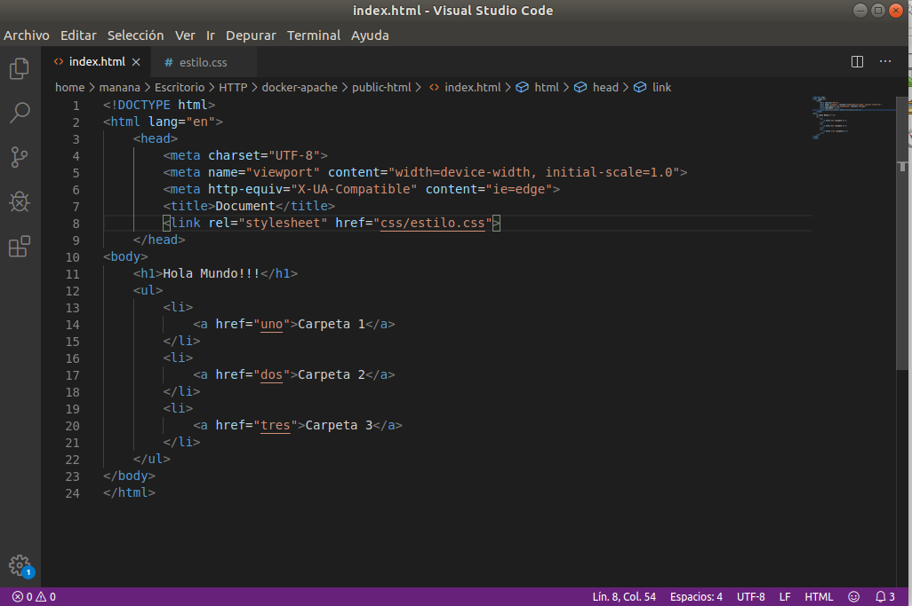$ cat > Dockerfile
From httpd:2.4
./public-html/ /usr/local/apache2/htdocs/
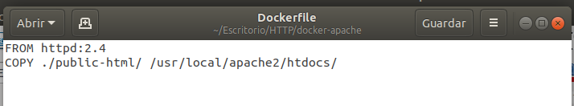$ docker build -t mi-imagen-apache2.
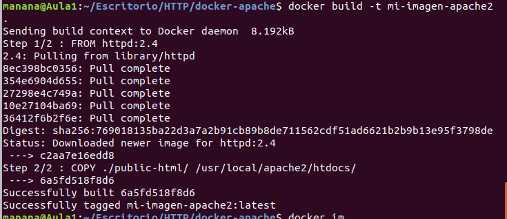$ docker run -dit --name mi-running-apache -p 8080:80 mi-apache2
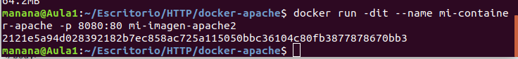Como estamos usando un contenedor, Apache ya está instalado.
El servidor escuchara el puerto 8008, NO eliminar el puerto 80.
Rehacer la imagen (cada vez que hagamos cambios)$ docker build -t mi-image-apache2.
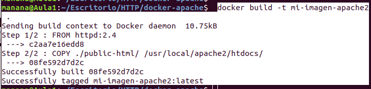$ docker stop mi-container-apache
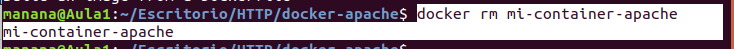$ docker rm mi-container-apache
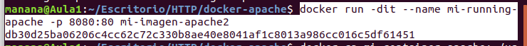$ docker run dit –name mi-container-apache p 8080 mi-image-apache2
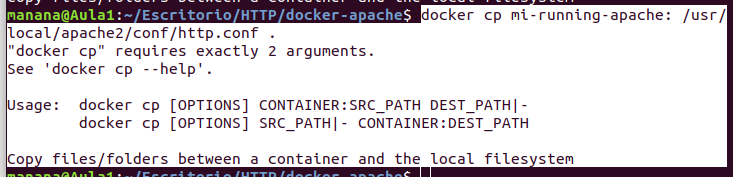$ docker cp mi-container-apache:/usr/local/apache2/conf/httpd.conf.
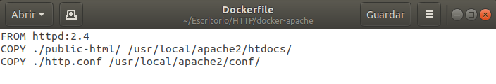FROM httpd:2.4
./public-html/ /usr/local/apache2/htdocs/
COPY ./httpd.conf /usr/local/apache2/conf/
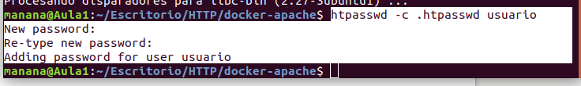$ htpasswd -c .htpasswd usuario
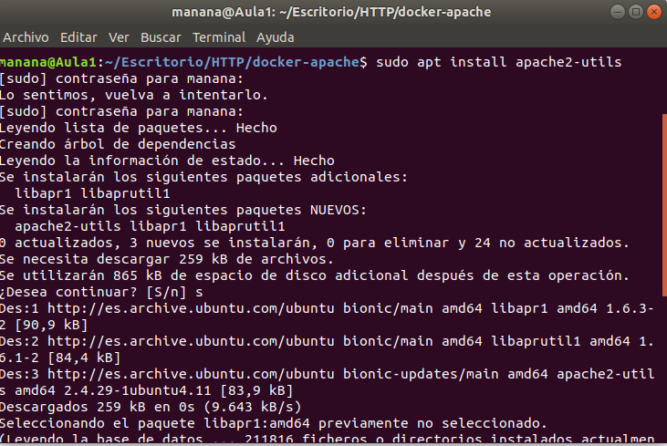$ sudo apt install apache2-utils
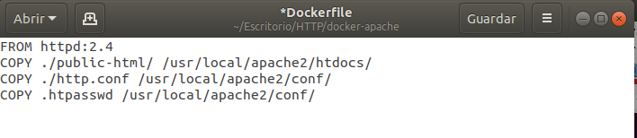FROM httpd:2.4
COPY ./public-html/ /usr/local/apache2/htdocs/
COPY ./httpd.conf /usr/local/apache2/conf/
COPY .htpasswd /usr/local/apache2/conf/
Location "/dos">
AuthType basic
AuthName "DOS: Autenticación Básica"
AuthUserFile /usr/local/apache2/conf/.htpasswd
Require valid-user
Location 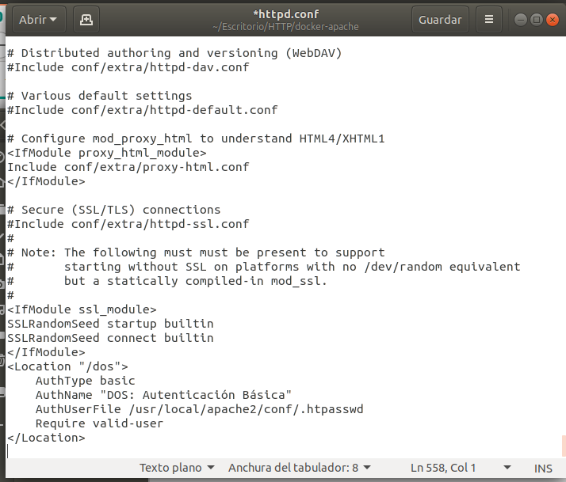(fichero reload.sh)
#!/bin/bash
echo "INICIO"
echo "Parando el contenedor: "
docker stop mi-container-apache
echo "Eliminando el contenedor: "
docker rm mi-container-apache
echo "Generando la nueva imagen: "
docker build -t mi-imagen-apache2 .
echo "Creando el contenedor y poniéndolo en marcha"
docker run -dit --name mi-container-apache -p 8080:80 mi-imagen-apache2
echo "TERMINADO!!!"
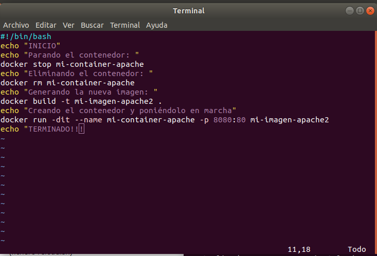htdigest -c .htdigest restringido pepe
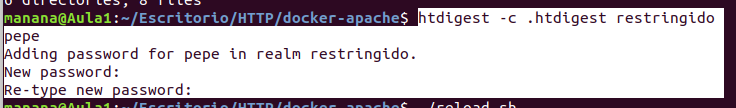FROM httpd:2.4
COPY ./public-html/ /usr/local/apache2/htdocs/
COPY ./httpd.conf /usr/local/apache2/conf/
COPY .htpasswd /usr/local/apache2/conf/
COPY .htdigest /usr/local/apache2/conf/
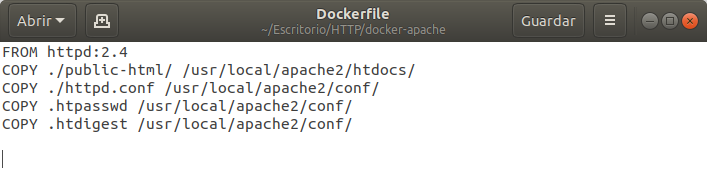Location "/tres">
AuthType digest
AuthName "restringido"
AuthDigestProvider file
AuthUserFile /usr/local/apache2/conf/.htdigest
Require valid-user
/Location>
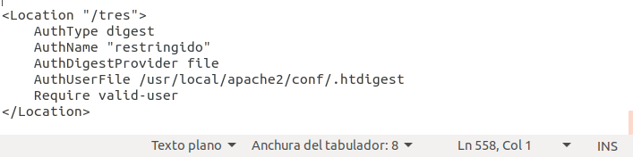#!/bin/bash
echo "INICIO"v
echo "Parando el contenedor: "
docker stop mi-container-apache
echo "Eliminando el contenedor: "
docker rm mi-container-apache
echo "Eliminando certificados antiguos"
rm -fr ssl
echo "Creando certificados nuevos:"
mkdir ssl
openssl genrsa -out ssl/server.key 1024
vopenssl req -new -key ssl/server.key -out ssl/server.csr
openssl x509 -req -days 365 -in ssl/server.csr -signkey ssl/server.key -out ssl/
server.crt
echo "Generando la nueva imagen: "
docker build -t mi-imagen-apache2 .
echo "Creando el contenedor y poniéndolo en marcha"
docker run -dit --name mi-container-apache -p 8080:80 mi-imagen-apache2
docker run -dit --name mi-container-apache mi-imagen-apache2
sleep 4
docker ps
echo "TERMINADO!!!"
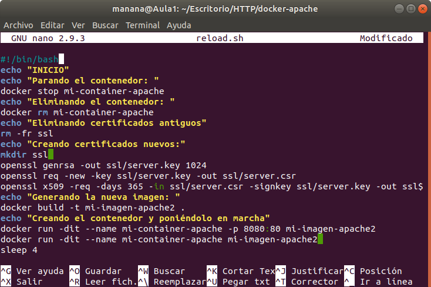FROM httpd:2.4
COPY ./public-html/ /usr/local/apache2/htdocs/
COPY ./httpd.conf /usr/local/apache2/conf/
COPY ./httpd-ssl.conf /usr/local/apache2/conf/extra/
COPY .htpasswd /usr/local/apache2/conf/
COPY .htdigest /usr/local/apache2/conf/
COPY ./ssl/ /usr/local/apache2/conf/
COPY ./extra/ /usr/local/apache2/conf/extra/
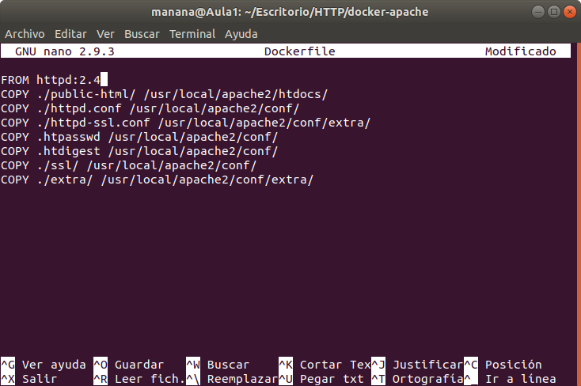LoadModule ssl_module modules/mod_ssl.so
Listen 443
VirtualHost *:443>
ServerName localhost
SSLEngine on
SSLCertificateFile "/usr/local/apache2/conf/server.crt"
SSLCertificateKeyFile "/usr/local/apache2/conf/server.key"
/VirtualHost>
#IfModule ssl_module>
#SSLRandomSeed startup builtin
#SSLRandomSeed connect builtin
#/IfModule>
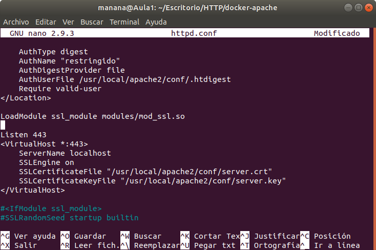mkdir docker-reverse
cd docker-reverse
touch Dockerfile
mkdir public-html
touch ./public-html/index.html
!DOCTYPE html>
head>
meta charset="UTF-8">
meta name="viewport" content="width=device-width, initial-scale=1.0">
meta http-equiv="X-UA-Compatible" content="ie=edge">
title>REVERSE PROXY
/head>
body>
h1>Ejemplo de apache reverse proxy
p>a href="./servicio/" >Pulsa aquí para acceder al contenido del otro contenedor
/body>
/html>
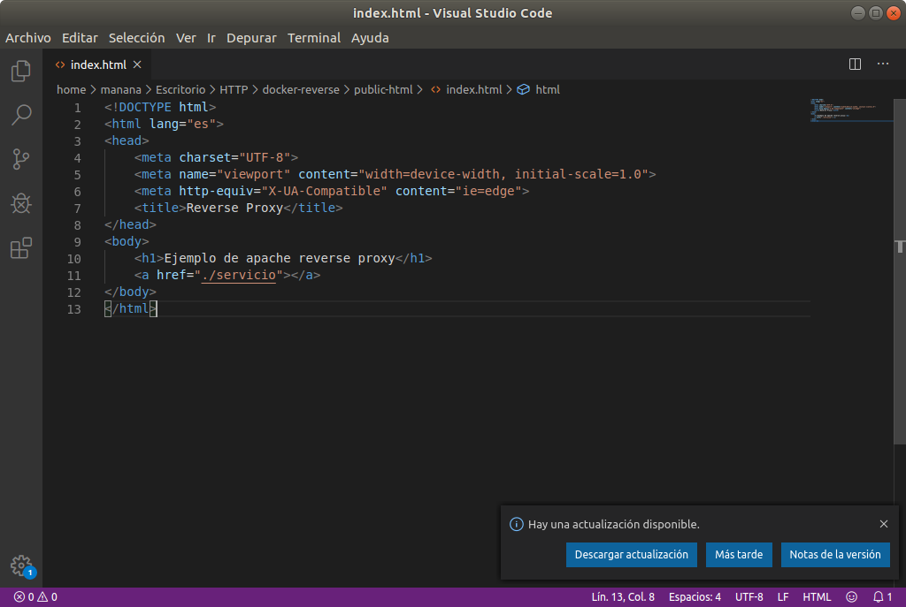FROM httpd:2.4
COPY ./public-html/ /usr/local/apache2/htdocs/
COPY ./httpd.conf /usr/local/apache2/conf
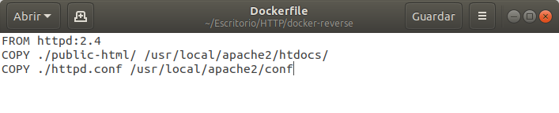#!/bin/bash
echo "INICIO"
echo "Parando el contenedor: "
docker stop reverse-apache
echo "Eliminando el contenedor: "
docker rm reverse-apache
echo "Generando la nueva imagen: "
docker build -t imagen-reverse-apache2 .
echo "Creando el contenedor y poniéndolo en marcha"
docker run -dit --name reverse-apache -p 8081:80 imagen-reverse-apache2
sleep 4
docker ps
echo "TERMINADO!!!"
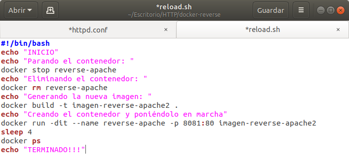